Guide de Storoff
Storoff est un atelier d'écriture de fiction qui fonctionne sur votre ordinateur, sans compte ni connexion : vos histoires sont des fichiers posés dans un dossier de votre disque. Ce guide fait le tour de tout ce que l'application sait faire, écran par écran. Chaque capture vient de l'histoire d'exemple « Le Dernier Phare ».
Sommaire
- Premiers pas
- L'écran d'une histoire
- Écrire un chapitre
- Mettre en forme
- Les noms de l'histoire
- Corriger
- Relire et retravailler
- Le confort d'écriture
- Les fiches
- Les vues d'ensemble
- Les cartes
- L'historique
- Le livre et les exports
- Paramètres et fichiers
- Raccourcis clavier
1. Premiers pas
Mes histoires
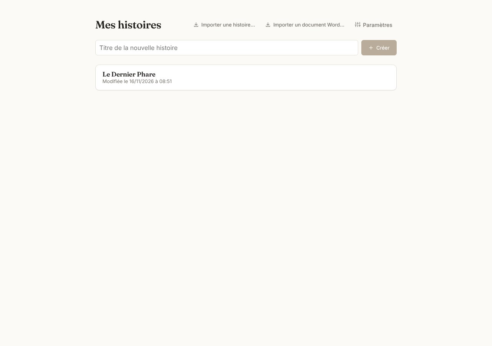
L'écran d'accueil liste vos histoires, la plus récemment modifiée en premier. Chaque histoire est indépendante : ses chapitres, ses fiches, ses cartes et son historique.
- Créer : tapez un titre dans le champ du haut, puis Entrée ou « Créer ». L'histoire s'ouvre, prête pour son premier chapitre.
- Renommer, dupliquer, supprimer : les boutons apparaissent au survol d'une histoire. La suppression demande confirmation et emporte l'historique.
- Importer une histoire… : ouvre un fichier
.storoff(une histoire complète exportée depuis Storoff, voir Exports) et l'ajoute comme nouvelle histoire. - Importer un document Word… : ouvre un fichier
.docx, écrit par Storoff ou par Word, et en fait une nouvelle histoire : chapitres, marges, gras, italique, soulignement, rature et style du manuscrit. Si le document a été exporté depuis une histoire encore présente, Storoff propose de le Comparer avec elle (voir Réimporter un document Word) ; cochez « Importer plutôt comme une nouvelle histoire » pour en faire une copie. - Paramètres : la langue de l'interface, le dossier des histoires, les dictionnaires (voir Paramètres).
2. L'écran d'une histoire

L'écran se partage en trois zones.
L'en-tête, de gauche à droite :
- Mes histoires revient à la liste ; les flèches ‹ › reviennent à l'écran précédent ou suivant.
- Le titre de l'histoire, qui ramène à son accueil.
- La langue du correcteur (ici « Français ») : un menu pour choisir le dictionnaire de l'histoire.
- L'ambiance (l'icône d'onde sonore) : sons d'ambiance et machine à écrire, voir Ambiance.
- À vérifier : ce que les outils de Storoff ont repéré dans l'histoire, voir À vérifier.
- Le compteur de mots du jour (l'anneau) : objectif quotidien, calendrier et sprints, voir Objectif du jour.
- Exporter : le livre mis en page, RTF, texte, EPUB, histoire complète.
- Les réglages (dernière icône) : les paramètres de l'application.
Le panneau de gauche rassemble la table des matières et les fiches : personnages, lieux, événements, dictionnaire. Chaque section a son bouton + pour créer, et parfois un bouton de vue d'ensemble (carte des liens, chronologie). Un clic droit sur une fiche propose de la supprimer.
La zone principale montre le chapitre ou la fiche ouverte. Une fiche ouverte depuis le texte s'affiche dans un panneau latéral, à droite, sans quitter le chapitre ; tout y est modifiable.
L'accueil de l'histoire
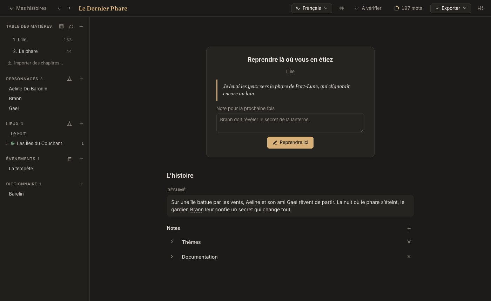
L'accueil s'affiche à l'ouverture de l'histoire, et chaque fois qu'on clique sur son titre dans l'en-tête.
Reprendre là où vous en étiez rappelle le chapitre écrit en dernier et la phrase où se trouvait le curseur. La note pour la prochaine fois garde l'idée à ne pas perdre (« Brann doit révéler le secret de la lanterne ») ; elle s'écrit sur la carte ou dans le menu de l'objectif du jour. Reprendre ici rouvre le chapitre à cet endroit précis : le curseur revient dans la phrase, le passage est centré et brille un instant. Chaque chapitre se rouvre d'ailleurs là où son curseur était resté.
L'histoire rassemble ce qui vaut pour toute l'histoire :
- le résumé : de quoi parle l'histoire, le point de départ, les personnages, ce qui est en jeu, la fin ; les noms de l'histoire y sont reconnus et le correcteur y passe ;
- les notes de l'histoire : thèmes, idées, documentation… chacune avec un titre qui sert de résumé.
Ils sont enregistrés avec l'histoire à chaque pause, et suivent un personnage renommé partout.
3. Écrire un chapitre
La table des matières
En haut du panneau de gauche, chaque chapitre affiche son numéro, son titre et son nombre de mots.
- + ajoute un chapitre à la fin.
- Glisser-déposer un chapitre (par la poignée qui apparaît au survol) change l'ordre.
- La corbeille au survol supprime le chapitre.
- Importer des chapitres… ajoute ceux d'un fichier
.txtou.md, découpé à ses titres (« Chapitre 3 », « CHAPTER ONE », « IV. », titres Markdown#…). - Les deux boutons de l'en-tête ouvrent Présences (la grille) et Qui parle ? (la bulle).
Le plan du chapitre
Au-dessus du texte, le plan du chapitre (repliable) contient :
- Ce que contiendra ce chapitre : les scènes, ce qui doit arriver, ce que le lecteur doit apprendre.
- Notes : des notes avec un titre qui sert de résumé.
L'éditeur
Le texte s'écrit sur une feuille, enregistrée automatiquement à chaque pause (Cmd/Ctrl+S enregistre tout de suite). Sous la page, une ligne d'état discrète donne les mots du chapitre, le temps de lecture, le nombre de pages imprimées (environ 250 mots par page) et, pendant une sélection, ses mots. Elle rappelle aussi le raccourci de l'aide : ⌘/ (Ctrl+/ sur Windows et Linux).
Un clic dans la marge de la feuille place le curseur sur la ligne cliquée : au début de la ligne dans la marge gauche, à la fin dans la marge droite.
Les outils du chapitre, à côté de son titre :
| Outil | Rôle |
|---|---|
| Historique | Les versions du chapitre, voir Historique |
| Lire | Le mode lecture, voir Mode lecture |
| Corriger | Le mode correction (le nombre d'erreurs en pastille), voir Corriger |
| Écouter | La lecture à voix haute, voir Écouter |
| 👤 | Une voix par personnage pendant la lecture à voix haute (activée ou non) |
| Style | La loupe du style, voir Loupe du style |
| Focus | Le mode focus, voir Mode focus |
Couper un chapitre
Placez le curseur là où le nouveau chapitre doit commencer, puis Paragraphe › Couper le chapitre ici : le texte qui suit devient un nouveau chapitre, juste après, qui s'ouvre. Chacun garde la trace de la coupe dans son historique.
4. Mettre en forme
La barre de mise en forme se tient au-dessus de la page, discrète tant qu'on ne la survole pas. Une bulle apparaît aussi au-dessus d'une sélection (gras, italique, note en marge, effacer la mise en forme…), et les raccourcis habituels fonctionnent : Cmd/Ctrl+B, I, U, Cmd/Ctrl+Maj+L, E, R, J pour aligner.
De gauche à droite : la police, la taille, gras, italique, souligné, barré, les quatre alignements, retrait moins et plus, l'interligne, puis Paragraphe, Mise en page et Ω (caractères spéciaux).
Les polices
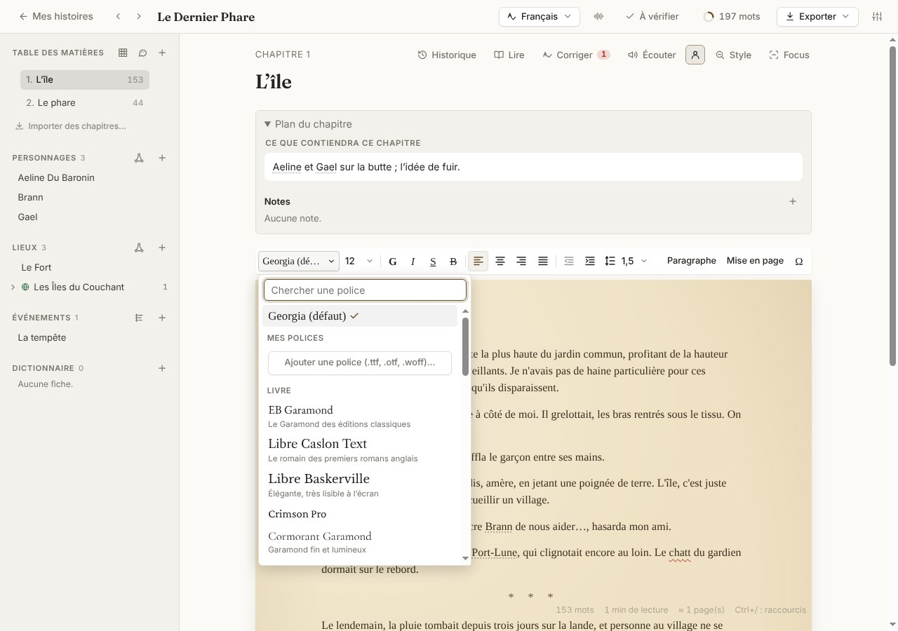
Chaque police est dessinée dans sa propre forme, avec un mot sur son usage, et une recherche en haut de la liste. Vingt polices sont fournies avec Storoff, rangées par famille :
- Livre : EB Garamond, Libre Caslon, Libre Baskerville, Crimson Pro, Cormorant Garamond, Vollkorn, Literata, Lora, Spectral, Alegreya, Gentium ;
- Écran et lisibilité : iA Writer Quattro et Duo, Atkinson Hyperlegible, OpenDyslexic ;
- Machine à écrire : Courier Prime, Special Elite, iA Writer Mono ;
- Caractère : Playfair Display, Caveat ;
- puis les polices habituelles du système.
Afficher les polices de cet ordinateur ajoute toutes celles qui sont installées. Ajouter une police (.ttf, .otf, .woff)… importe vos propres fichiers, rangés sous « Mes polices » et disponibles dans toutes les histoires (et dans le PDF du livre) ; × en retire une.
Paragraphe
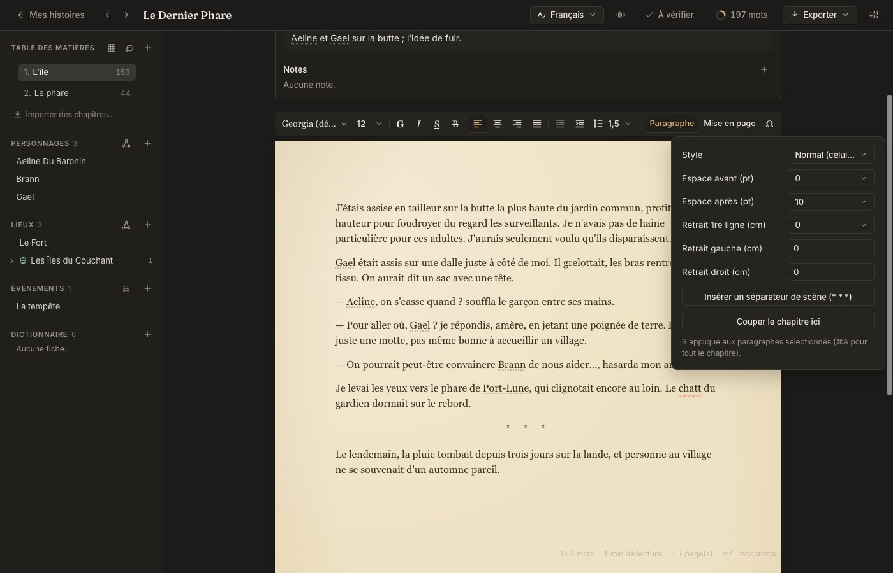
- Style : Normal (celui du manuscrit), Citation, Lettre, Vers, Centré, Épigraphe ; chaque style règle retraits, espaces et alignement d'un coup.
- Espace avant / après, retrait de première ligne, retraits gauche et droit.
- Insérer un séparateur de scène (* * *) : une ligne qui ne contient que
* * *,#,⁂ou~est un séparateur, centré et espacé ; le livre l'imprime comme un ornement. - Couper le chapitre ici, voir plus haut.
Les réglages s'appliquent aux paragraphes sélectionnés (⌘A pour tout le chapitre). La fenêtre reste ouverte pendant qu'on change les valeurs, pour comparer avant et après.
Mise en page
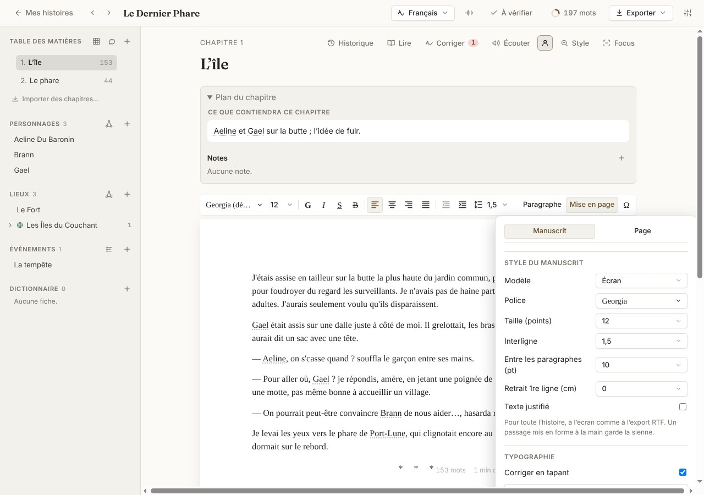
L'onglet Manuscrit règle le style de toute l'histoire d'un coup : police, taille, interligne, espace entre les paragraphes, retrait de première ligne, texte justifié. Des modèles prêts à l'emploi : Écran (par défaut), Roman, Manuscrit d'éditeur, Machine à écrire, Lecture confortable, Grande lisibilité, Dyslexie, Carnet. Un passage mis en forme à la main garde sa mise en forme. L'export RTF reprend ce style.
La section Typographie active ou coupe la typographie automatique (voir ci-dessous) et peut remettre en forme tout le chapitre en une étape (⌘Z pour annuler).
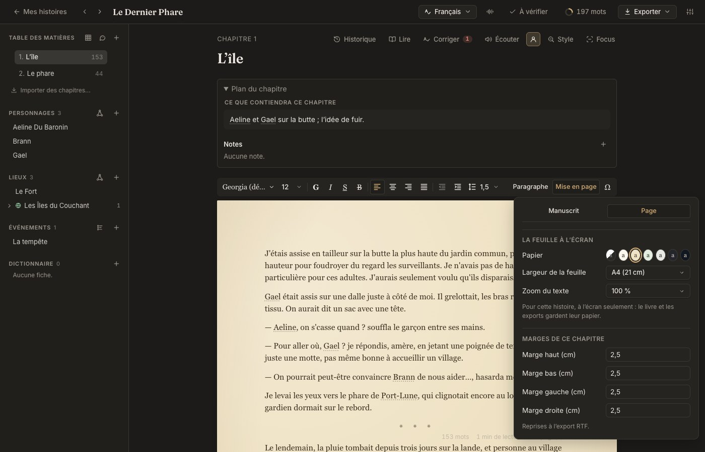
L'onglet Page règle la feuille à l'écran : le papier (celui du thème, Ivoire, Parchemin, Sauge, Gris doux, Nuit, Encre), la largeur de la feuille (étroite, A4, large, pleine largeur), le zoom du texte (80 à 150 %) et les marges du chapitre. Ces choix valent pour l'écran : le livre et les exports gardent leur propre papier.
Caractères spéciaux
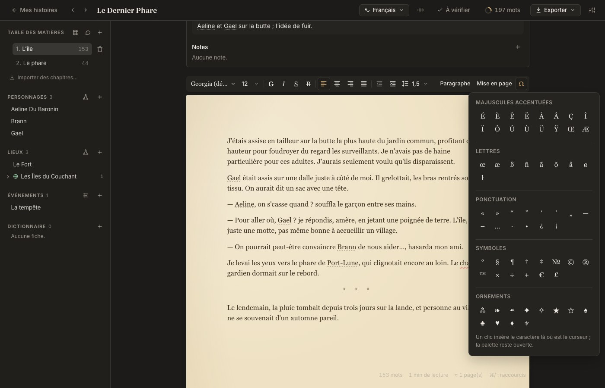
Ω ouvre une palette par famille : capitales accentuées (É À Ç Œ…), lettres (œ æ ß ñ…), ponctuation (« » “ ” — … ¿ ¡), symboles (° § № €…) et ornements (⁂ ❧ ✦…). Un clic insère le caractère au curseur.
La typographie automatique
Pendant la frappe, en français : les guillemets « » avec leurs espaces insécables, l'espace fine insécable
avant ; ! ?, l'espace insécable avant :, l'apostrophe typographique ’. En anglais, les guillemets courbes.
Dans toutes les langues : un tiret en début de ligne devient un tiret de dialogue (—), -- donne aussi
un tiret long, ... des points de suspension (…). Retour arrière juste après rend ce qui a été tapé.
5. Les noms de l'histoire
Storoff connaît les noms de vos fiches : personnages, lieux, événements, mots du dictionnaire, avec leurs autres noms.
Autocomplétion
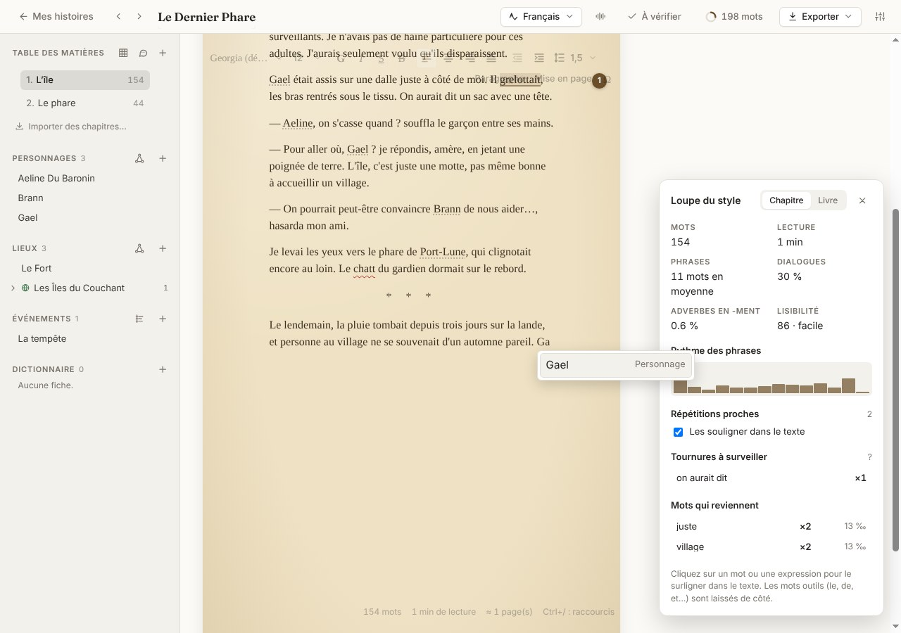
Dès les premières lettres d'un nom, une suggestion propose de le compléter (Entrée ou Tab).
Ancres vers les fiches
Les noms reconnus sont soulignés d'un pointillé discret : Cmd/Ctrl+clic ouvre leur fiche dans le panneau latéral. Les lieux et les mots du dictionnaire sont aussi reconnus en minuscules (« la cantine ») ; les prénoms non (« une rose » n'est pas « Rose »).
Un personnage au nom composé (« Aeline Du Baronin ») est aussi reconnu par son prénom seul et par son nom de famille, avec ou sans particule, tant qu'aucune autre fiche ne le porte. Un mot d'un nom n'est jamais une faute d'orthographe (« Les Baronin sont ignobles »).
Créer une fiche depuis le texte
Un clic droit sur un mot (ou une sélection) propose de créer le personnage ou le lieu sans quitter le texte. La fiche porte la mention « à compléter » jusqu'à ce que vous la marquiez comme complétée.
Renommer partout
Quand le nouveau nom d'un personnage ou d'un lieu est validé sur sa fiche, il remplace l'ancien dans toute l'histoire : le texte des chapitres (dialogues compris), leurs titres, plans et notes, les autres fiches, et le résumé et les notes de l'histoire. Mots entiers seulement, avec la casse de chaque occurrence (AELINE → ILONA) et les élisions corrigées (« d'Aeline » → « de Brann »). Un message dit où le nom a changé, et Annuler dans le texte rend les textes.
6. Corriger
Le correcteur orthographique
Les fautes sont soulignées en rouge pendant la frappe. La langue se choisit dans l'en-tête ; le français est fourni, d'autres langues s'ajoutent dans les paramètres.
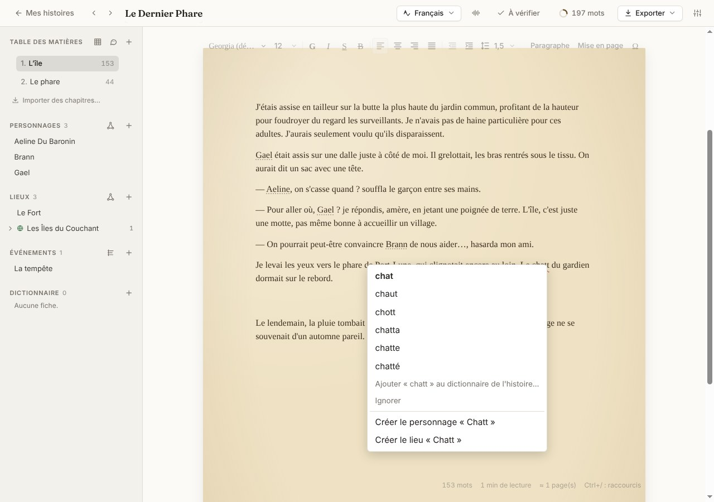
Un clic droit sur un mot souligné rassemble tout au même endroit : les corrections proposées, ajouter au dictionnaire de l'histoire (avec une définition ; ses accords et conjugaisons sont ensuite reconnus), ignorer, le problème de grammaire éventuel, et la fiche à créer.
Le correcteur grammatical
Optionnel, il s'installe depuis les paramètres (application de bureau) : LanguageTool, qui tourne sur votre ordinateur (le texte ne quitte jamais Storoff), souligne en bleu les accords, mots manquants, ponctuation… Le dernier mot d'une phrase en cours d'écriture n'est pas souligné.
Les tirets de dialogue tapés comme des traits d'union sont soulignés, avec « remplacer tous les tirets de dialogue du chapitre ».
Le mode correction
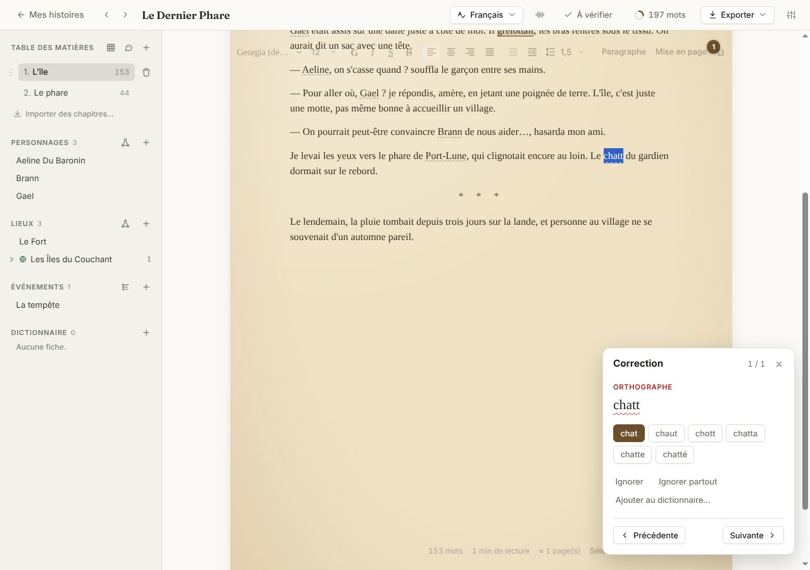
Corriger (ou F7) parcourt toutes les erreurs du chapitre, une par une : la carte montre le mot, les corrections en un clic, ignorer, ignorer partout, ajouter au dictionnaire. F8 et Maj+F8 passent à l'erreur suivante ou précédente.
7. Relire et retravailler
Rechercher et remplacer
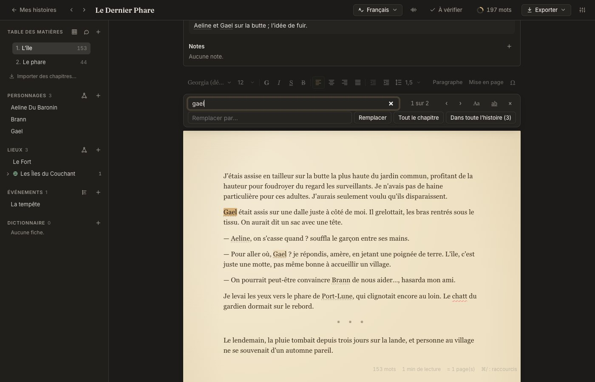
Cmd/Ctrl+F ouvre une barre au-dessus de la page, avec le texte sélectionné comme recherche. Les accents sont ignorés (« ete » trouve « Été »), la casse (Aa) et les mots entiers (ab) se demandent. Toutes les occurrences sont surlignées, « 1 sur 2 », Entrée et Maj+Entrée pour les parcourir.
- Remplacer remplace l'occurrence courante et passe à la suivante.
- Tout le chapitre remplace en une étape (⌘Z annule).
- Dans toute l'histoire (3) remplace dans tous les chapitres (chacun garde l'ancienne version dans son historique).
Le remplacement prend la casse de ce qu'il remplace (« Été » → « Hiver »).
Notes en marge
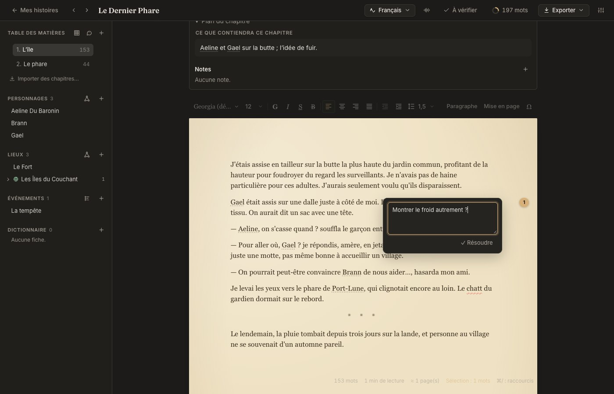
Sélectionnez un passage, puis ✎ Note dans la bulle : le passage est légèrement surligné, un repère numéroté se pose dans la marge droite à sa hauteur et la carte de la note s'ouvre pour écrire. Un clic sur le passage ou sur le repère la rouvre ; Résoudre retire la note et garde le passage. Les notes ne sortent pas dans les exports, et À vérifier rassemble celles qui restent ouvertes.
Mode lecture
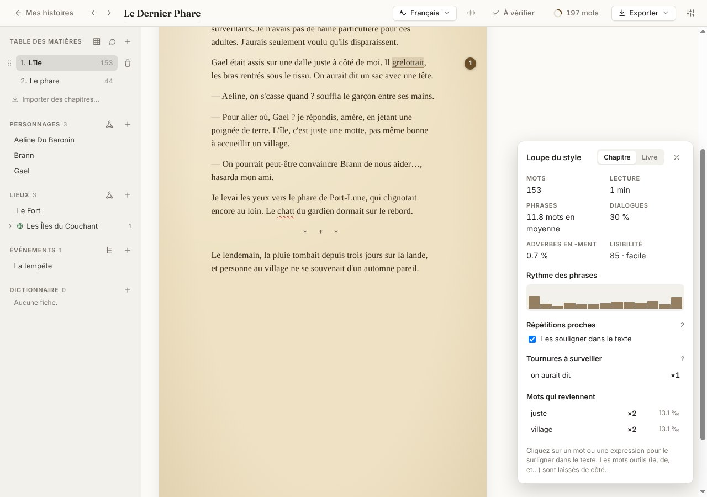
Lire retire la barre de mise en forme et les soulignements des noms : le texte se lit comme une page de livre (maintenir Cmd/Ctrl fait réapparaître les ancres). Écrire revient à l'écriture.
La loupe du style
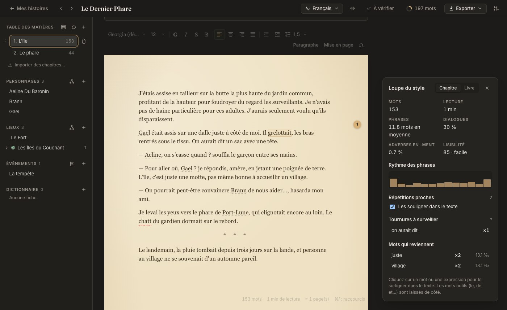
Style (ou F9) ouvre un panneau à côté de la page, pour le chapitre ou tout le livre :
- les chiffres : mots, temps de lecture, longueur moyenne des phrases, part de dialogue, adverbes en -ment, lisibilité ;
- le rythme des phrases en barres (les longues en orange) ;
- les répétitions proches, soulignées de points orange dans le texte ;
- les tournures à surveiller (il y a, se mit à, soudain, comme si…) ;
- les mots qui reviennent et les expressions répétées ;
- les noms mal orthographiés probables (un mot à une lettre d'un nom de l'histoire).
Un clic sur un mot ou une expression la surligne partout dans le texte.
Écouter le texte
Écouter lit le chapitre à voix haute avec une voix de l'ordinateur, phrase après phrase depuis le curseur ; la phrase lue est sélectionnée. Avec l'icône 👤 active, chaque personnage a sa voix : la narration garde la voix habituelle, les répliques prennent les autres voix de l'ordinateur (plus aiguë pour « dit-elle », plus grave pour « dit-il »).
8. Le confort d'écriture
Mode focus
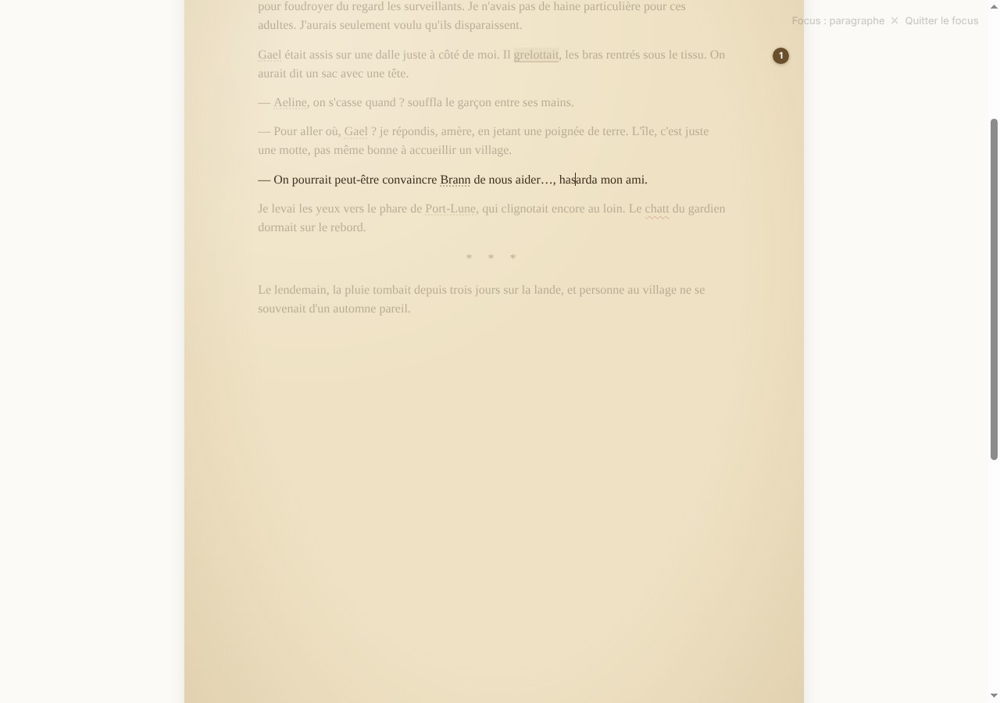
Focus (ou Cmd/Ctrl+Maj+F) passe en plein écran : il ne reste que la page, les autres paragraphes s'estompent et la ligne en cours reste centrée. Focus : paragraphe / phrase choisit ce qui reste lumineux ; par phrase, seule la phrase en cours d'écriture reste nette. Échap ou Quitter le focus en sort.
Objectif du jour et sprints
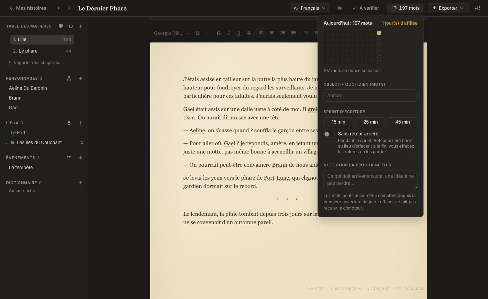
L'anneau de l'en-tête se remplit vers votre objectif quotidien (les mots écrits aujourd'hui ; effacer ne fait pas reculer le compteur). Son menu montre :
- le calendrier des douze dernières semaines, une case par jour, plus claire quand le jour approche de l'objectif, et les jours d'affilée ;
- l'objectif quotidien en mots ;
- les sprints d'écriture de 15, 25 ou 45 minutes (temps restant et mots écrits dans l'en-tête) ;
- Sans retour arrière : pendant le sprint, rien ne s'efface. Retour arrière barre au lieu d'effacer, comme sur papier ; à la fin, vous effacez les ratures ou les gardez ;
- la note pour la prochaine fois, la même que sur la carte « Reprendre ».
Ambiance et machine à écrire
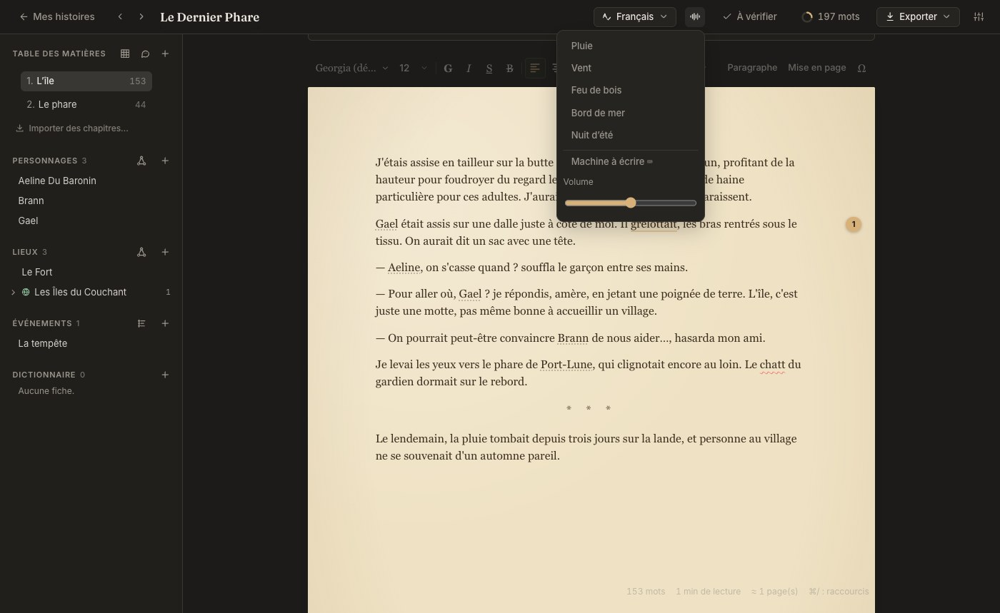
Le menu de l'ambiance joue de la pluie, du vent, un feu de bois, le bord de mer ou une nuit d'été, créés à la volée (rien à télécharger), avec un volume. Machine à écrire ⌨ fait sonner chaque touche tapée dans le manuscrit comme une vraie machine, avec la clochette au retour à la ligne. Le son suit l'écrivain d'un chapitre à une fiche et s'arrête quand l'histoire se ferme.
Raccourcis clavier
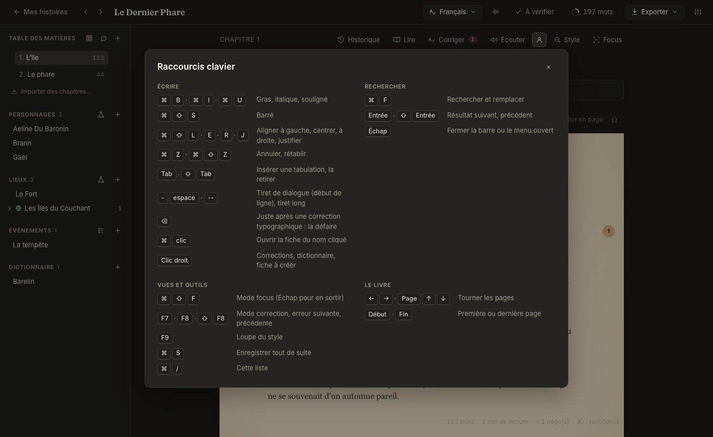
Cmd/Ctrl+/ ouvre la liste de tous les raccourcis, par famille. Voir aussi Raccourcis clavier.
9. Les fiches
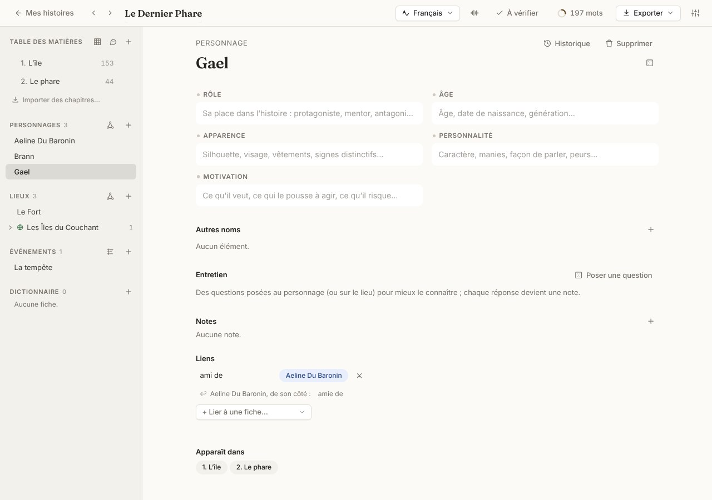
Quatre sortes de fiches, chacune dans sa section du panneau de gauche :
- Personnages : des champs (rôle, âge, apparence, personnalité, motivation…), chacun dans sa case ; ils s'ajoutent, se renomment et se retirent.
- Lieux : une description, et éventuellement une carte.
- Événements : un titre, un « Quand » libre (« an 302 », « 12 mars 1890 », « jour 3 »…), une description.
- Dictionnaire : les mots inventés de l'histoire, voir ci-dessous.
Sur toutes les fiches :
- Autres noms : surnoms et titres (« Ael' »), reconnus dans le texte ; pour un personnage, avec les personnages qui l'emploient.
- Entretien (personnages et lieux) : Poser une question tire une question parmi celles qui n'ont pas encore de réponse (« Quelle odeur te ramène à ton enfance ? ») ; Garder la réponse en fait une note.
- Notes : des notes avec un titre.
- Liens : « ami de » [Aeline], avec le nom du lien vu de l'autre côté (« amie de »). Un lien se voit et se modifie sur les deux fiches ; deux fiches partagent un lien au plus.
- Apparaît dans : les chapitres qui mentionnent la fiche, calculés automatiquement ; un clic ouvre le chapitre.
- Le dé à côté du nom (personnages et lieux) propose huit noms dans le style de l'histoire.
- Historique et Supprimer en haut à droite. Supprimer un lieu qui en contient d'autres (les territoires d'un monde, les bâtiments d'un territoire…) propose de les supprimer aussi.
Le dictionnaire de l'histoire
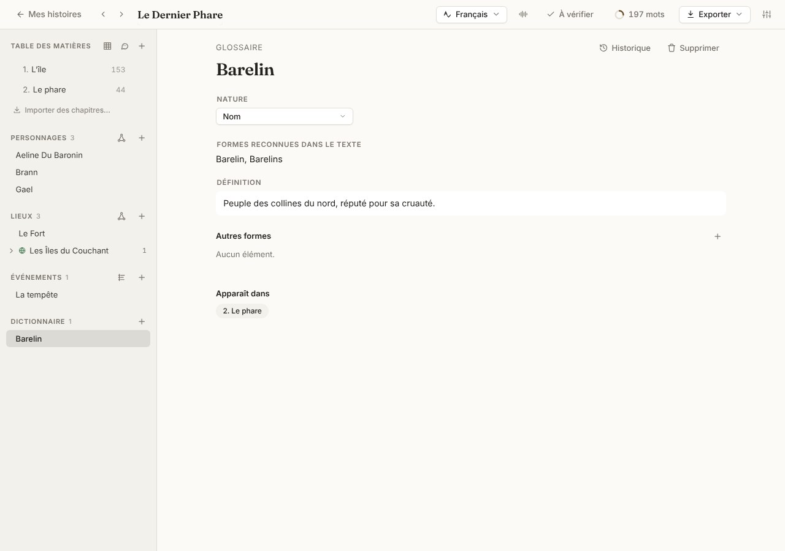
Un mot du dictionnaire a une nature (nom, adjectif, verbe en -er, en -ir, invariable) et une définition. Storoff en déduit les formes reconnues dans le texte (ici « Barelin, Barelins ») : le pluriel, le féminin, les conjugaisons ne sont plus des fautes. Des autres formes s'ajoutent à la main.
10. Les vues d'ensemble
Qui parle ?
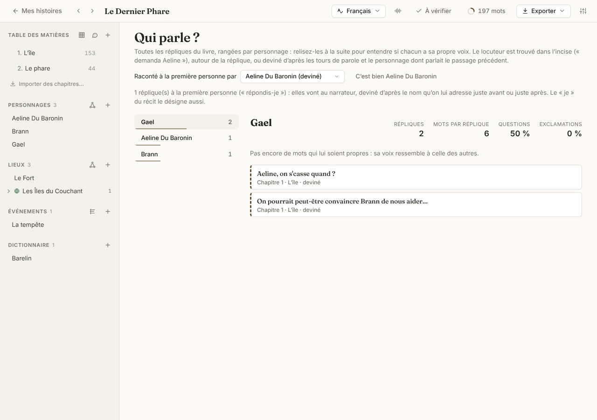
La bulle de la table des matières range toutes les répliques du livre par personnage, pour relire chaque voix à la suite. Le locuteur est trouvé dans l'incise (« demanda Aeline »), autour de la réplique, ou deviné d'après les tours de parole et le personnage dont parlait le passage précédent ; une réplique devinée a un bord en pointillé.
- Pour chacun : nombre de répliques, mots par réplique, part de questions et d'exclamations, ses expressions et les mots qui lui sont propres.
- Raconté à la première personne par : dans un récit au « je », le narrateur est deviné (les répliques « répondis-je » lui reviennent) ; confirmez-le ou choisissez-en un autre.
- Locuteur incertain regroupe les répliques que personne ne peut attribuer : une incise à ajouter.
Un clic sur une réplique ouvre son chapitre, la réplique surlignée.
Présences et relations
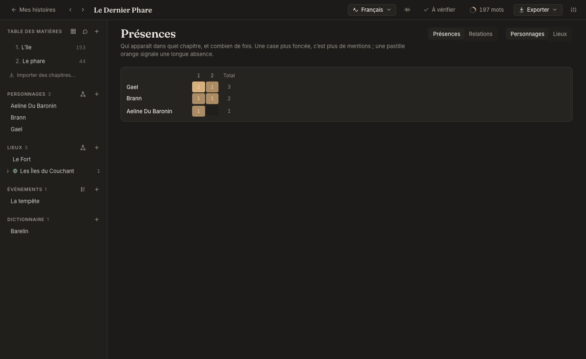
La grille de la table des matières croise les personnages (ou les lieux) et les chapitres : une case plus foncée, c'est plus de mentions ; une pastille orange signale une longue absence. Un clic sur une case ouvre le chapitre. Relations dispose les fiches en graphe : les liens écrits sur les fiches en doré, les chapitres partagés en gris.
Carte des liens
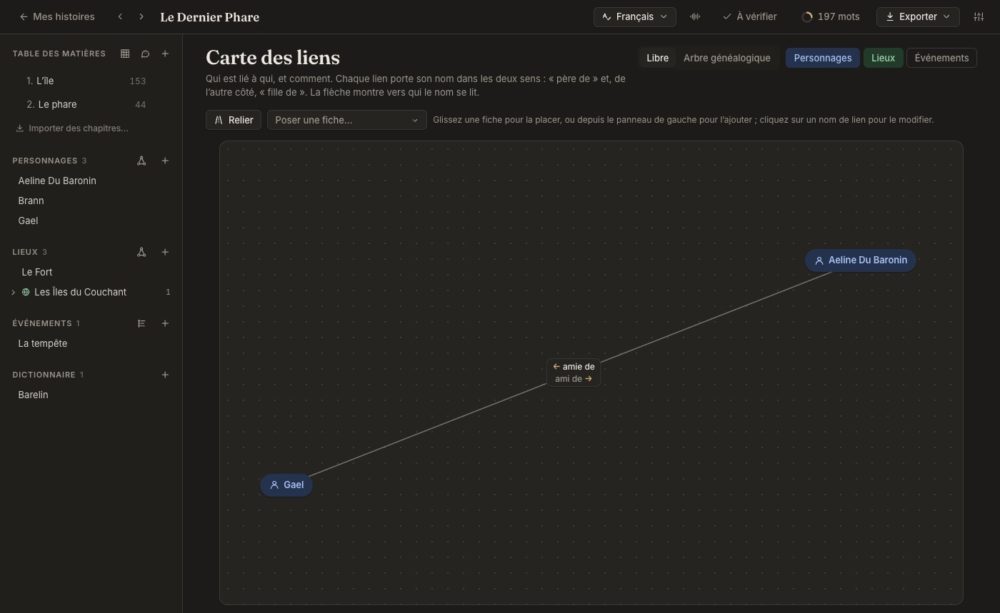
Le bouton à côté du + des personnages ou des lieux ouvre la carte des liens : chaque lien écrit sur sa ligne dans les deux sens, une flèche vers la fiche qu'il désigne.
- Glissez une fiche pour la placer ; elle reste où vous l'avez posée. Poser une fiche… en ajoute une.
- Relier : glissez d'une fiche à une autre pour créer un lien.
- Arbre généalogique range les générations d'après les liens de famille.
- Les filtres Personnages, Lieux, Événements choisissent les fiches montrées.
Chronologie
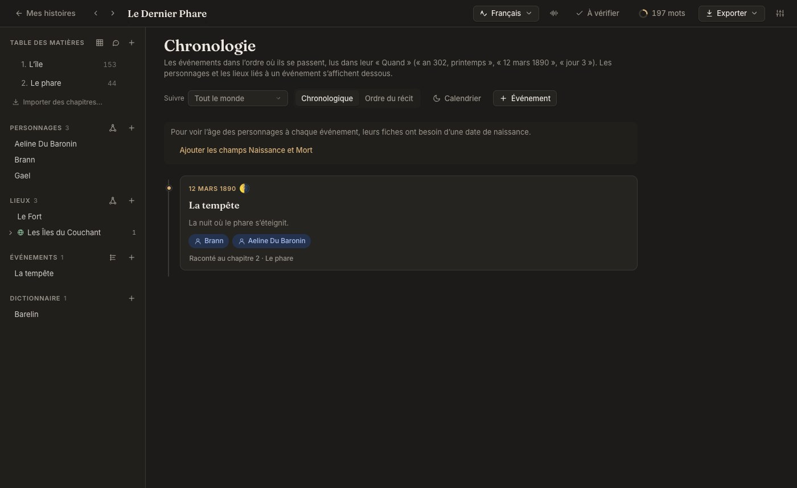
Le bouton à côté du + des événements ouvre la chronologie : les événements dans l'ordre où ils se passent, lus dans leur « Quand », avec « 13 ans plus tard » entre eux, les personnages et lieux liés, et le chapitre qui le raconte. Ordre du récit les montre dans l'ordre du livre (les retours en arrière sont signalés).
- Avec un champ Naissance, chaque personnage a son âge à chaque événement ; un personnage lié à un événement avant sa naissance ou après sa mort est signalé.
- Suivre un seul personnage.
- Calendrier : le calendrier réel (avec la vraie phase de la Lune 🌗) ou un calendrier inventé, avec ses mois et ses lunes.
À vérifier
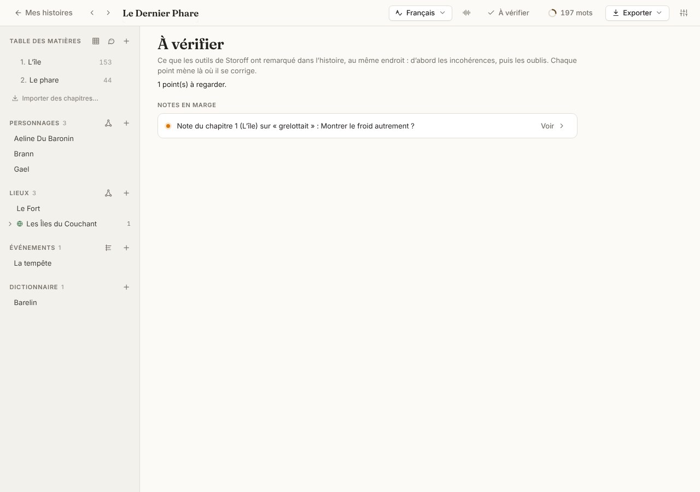
À vérifier, dans l'en-tête, rassemble ce que les outils ont remarqué, les incohérences d'abord : notes en marge ouvertes, personnage lié à un événement après sa mort, mot qui ressemble à un nom mal orthographié, personnage absent depuis longtemps, fiche à compléter, réplique sans locuteur clair, date illisible, lien sans nom, chapitre vide. Voir mène à l'endroit à corriger.
11. Les cartes
Un lieu peut devenir une carte : sur sa fiche, Créer une carte…, puis le type, définitif :
- Monde : une planète, en globe 3D ou en planisphère ;
- Territoire : une ville, une forêt, une île… en 3D ou vue de dessus, posé sur un monde ;
- Bâtiment : en 3D ou vu de dessus, posé sur un territoire.
Le monde
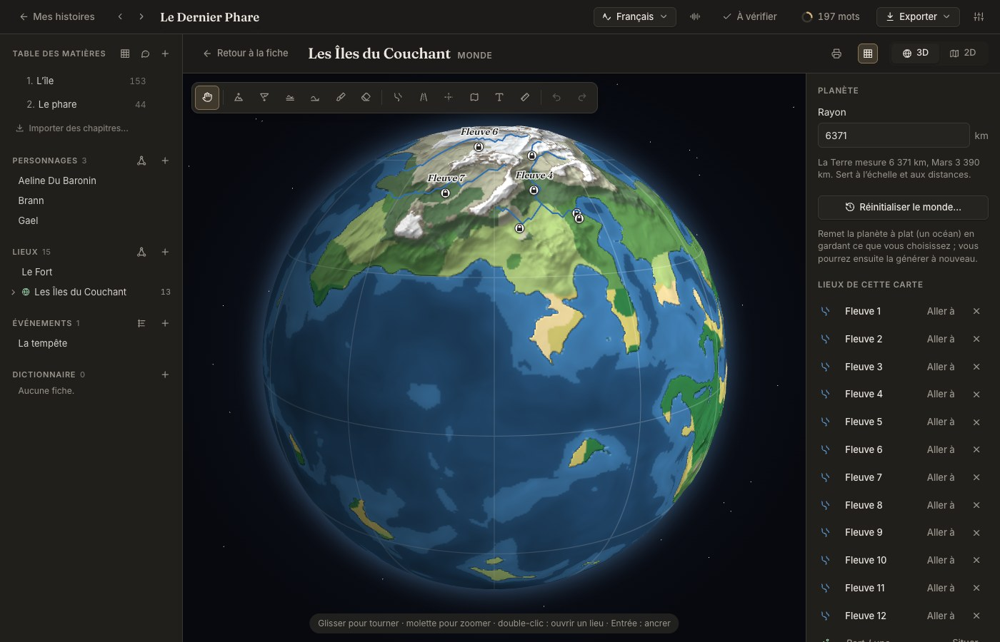
Une planète neuve est un océan. Générer la planète crée continents, reliefs et rivières selon les réglages (océans, continents, relief, rivières, graine) ; Réinitialiser le monde… remet à plat en gardant ce que vous choisissez. Les outils, en haut à gauche :
- Naviguer (H) ; Élever, Abaisser, Aplanir, Adoucir le terrain au pinceau ;
- Peindre un biome (forêt, désert, toundra…) ou rendre le biome automatique ;
- tracer une rivière, une route, une frontière, une région (une nation, une province) ;
- poser un lieu ou un territoire, écrire un nom sur la carte (un lieu à compléter est créé) ;
- Mesurer une distance, avec les temps de trajet à pied, à cheval et en bateau ;
- annuler et rétablir (Cmd/Ctrl+Z, Cmd/Ctrl+Maj+Z).
Les lieux de cette carte sont listés à droite ; Aller à y amène la vue.
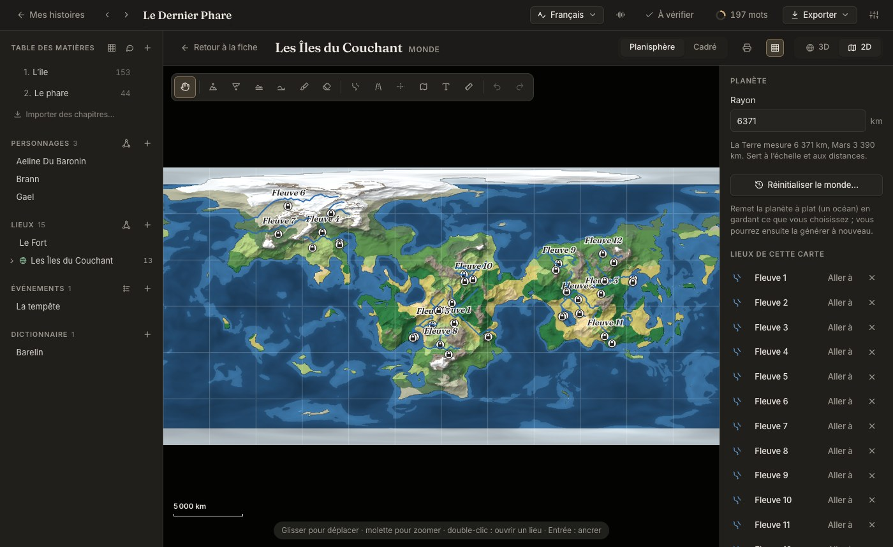
2D montre le monde en planisphère, ou cadré sur une région. Le bouton d'impression imprime la carte.
Territoires et bâtiments
Un territoire se dessine vu de dessus ou en 3D : peindre le sol (herbe, pavé, eau, sable…), tracer des routes (virages et carrefours se placent seuls), dessiner des quartiers, esquisser des volumes, poser des modèles 3D. Un bâtiment se construit étage par étage : pièces (chacune devient un lieu à compléter), portes, fenêtres, passages, meubles, avec une vue en coupe (C).
La bibliothèque de modèles importe des kits gratuits (licence CC0) tels quels, en .zip.
12. L'historique
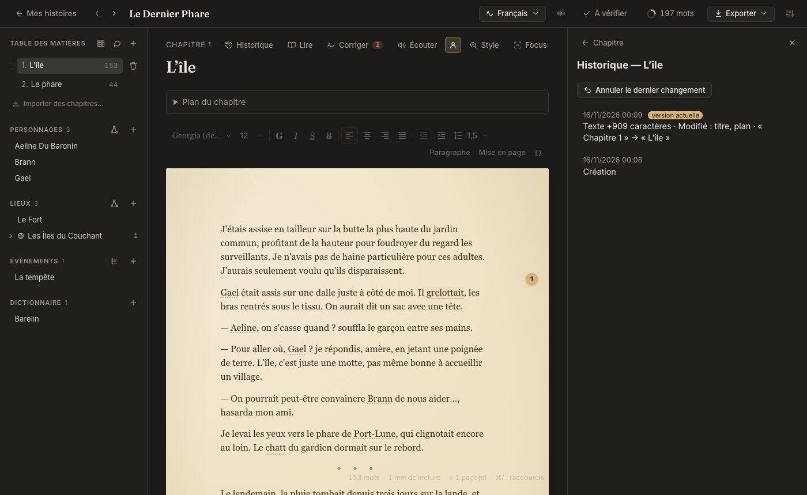
Chaque chapitre et chaque fiche a son propre historique : Historique l'ouvre dans le panneau latéral, chaque version avec sa date et ce qui a changé (« Texte +909 caractères · Modifié : titre, plan »). Annuler le dernier changement ou Revenir à cette version ne détruit rien : l'état actuel reste dans l'historique. Cmd/Ctrl+S enregistre une version tout de suite.
13. Le livre et les exports
Le livre
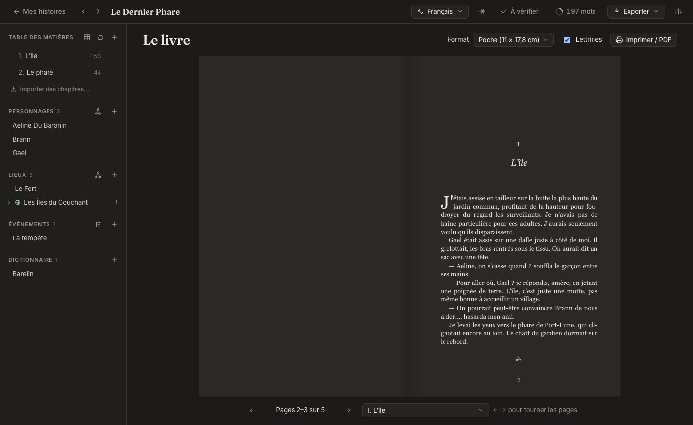
Exporter › Voir le livre met le manuscrit en page comme un livre imprimé, en double page : format poche (11 × 17,8 cm), A5 ou grand format, dans la police du manuscrit, justifié avec césure. Une page de titre ouvre le livre ; chaque chapitre commence sur une nouvelle page avec son numéro, son titre et une lettrine (désactivable) ; les séparateurs de scène deviennent un ornement ; titre courant et numéros de page. Les flèches, Page ↑ ↓, Début et Fin tournent les pages. Imprimer / PDF imprime le livre ou l'enregistre en PDF, polices comprises.
Les exports
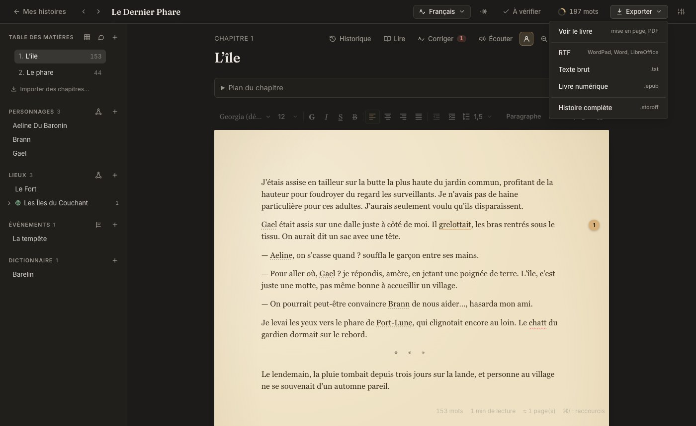
- RTF : pour WordPad, Word ou LibreOffice, avec toute la mise en forme et le style du manuscrit.
- Texte brut (.txt).
- Livre numérique (.epub) : un EPUB 3 avec sa table des matières.
- Document Word (.docx) : un chapitre par titre de niveau 1, avec les marges, la mise en forme (gras, italique, souligné, barré, police et taille) et les styles de paragraphe de Storoff (citation, lettre, vers, centré, épigraphe), que Word affiche par leur nom. Le fichier revient à l'identique dans Storoff par « Importer un document Word… » : chaque chapitre garde son identifiant et son titre, et le style du manuscrit est restauré. Modifié dans Word, il se rouvre aussi, mais les styles nommés par Storoff doivent rester en place pour être reconnus.
- Réimporter un document Word… : compare un document Word avec l'histoire ouverte (voir ci-dessous).
- Histoire complète (.storoff) : tout (chapitres, fiches, cartes), à rouvrir avec « Importer une histoire… » ; l'historique n'est pas inclus.
- Preuve d'antériorité… : un dossier daté qui prouve que votre texte existait à ce jour (voir ci-dessous).
Prouver l'antériorité d'un texte
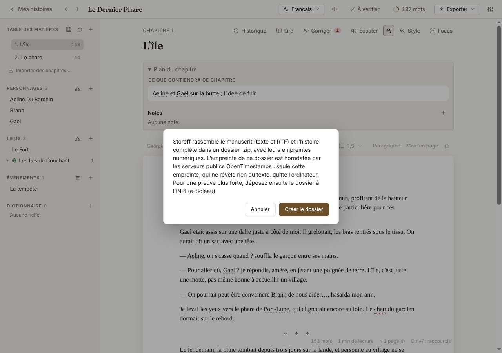
Vos textes sont protégés par le droit d'auteur dès leur création, sans aucun dépôt. En cas de plagiat, il faut en revanche prouver que vous les aviez écrits avant : faites-le avant d'envoyer un manuscrit à un éditeur, à un concours ou à des bêta-lecteurs.
Exporter › Preuve d'antériorité… enregistre un dossier .zip avec :
- le manuscrit en texte brut et en RTF, et l'histoire complète (.storoff) ;
empreintes-sha256.txt: le titre, la date, le nombre de mots, et l'empreinte numérique de chaque fichier (changer une seule lettre change l'empreinte) ;empreintes-sha256.txt.ots: l'horodatage de ce fichier par les serveurs publics OpenTimestamps, ancré dans la blockchain Bitcoin quelques heures plus tard. Seule l'empreinte est envoyée : rien de votre texte ne quitte l'ordinateur. Sans connexion, le dossier est créé sans horodatage.
Pour vérifier ou compléter l'horodatage, déposez les deux fichiers empreintes-sha256.txt et .ots sur
opentimestamps.org. Gardez le dossier tel quel : un fichier modifié ne
correspond plus à son empreinte. Pour une preuve plus forte, déposez aussi le dossier auprès d'un tiers de
confiance : l'e-Soleau de l'INPI, la SGDL, un notaire ou un commissaire de justice.
Réimporter un document Word
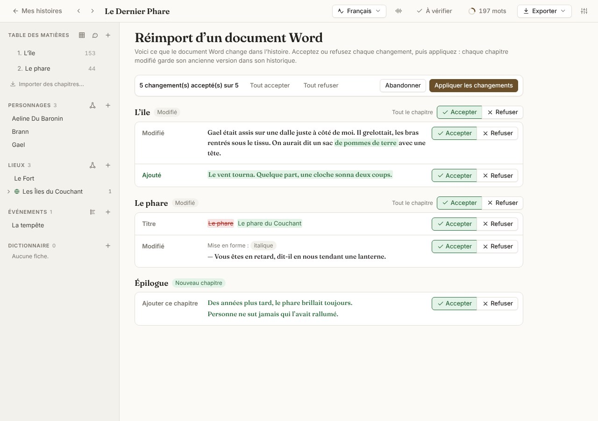
Vous avez exporté le manuscrit en Word, et vous (ou un relecteur) l'avez retravaillé dans Word. Exporter › Réimporter un document Word… ouvre ce document et montre ce qu'il change dans l'histoire, avant de rien modifier :
- Les chapitres sont reconnus même déplacés, renommés ou précédés d'un nouveau chapitre (Storoff a laissé une marque invisible sur chaque titre), puis par leur titre et leur texte pour un document écrit ailleurs. Un chapitre que seul le document a est un Nouveau chapitre ; un chapitre que le document n'a plus est Absent du document, et n'est supprimé que si vous l'acceptez (son historique part avec lui).
- Les paragraphes modifiés sont comparés mot à mot (le texte retiré barré en rouge, l'ajouté en vert) ; ceux dont seule la mise en forme change disent laquelle (police, gras, italique, alignement, interligne…). Les paragraphes ajoutés ou supprimés sont montrés en bloc.
- L'histoire : son titre, le Style du manuscrit (si le style « Normal » a changé dans Word) et l'Ordre des chapitres.
Chaque changement a ses boutons Accepter et Refuser ; Tout le chapitre, Tout accepter et Tout refuser décident pour plusieurs à la fois. Appliquer les changements reporte ceux acceptés : chaque chapitre modifié reçoit une nouvelle version dans son historique, sa version d'avant y reste. Abandonner ne touche à rien.
Ce que Word change de lui-même (espaces insécables, apostrophes typographiques) ne compte pas comme un changement. Les notes dans la marge restent sur le texte que le document a gardé. Si des chapitres ont été modifiés dans Storoff après l'export, ils sont signalés : accepter la version du document pourrait défaire ces modifications.
14. Paramètres et fichiers
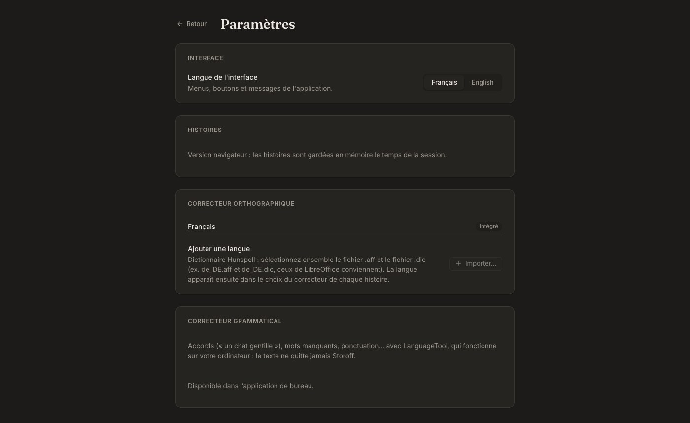
- Langue de l'interface : français ou anglais, appliquée tout de suite.
- Histoires : le dossier où elles sont rangées (application de bureau), que vous pouvez changer et ouvrir.
- Correcteur orthographique : ajouter une langue en important un dictionnaire Hunspell (les fichiers
.affet.dicensemble, ceux de LibreOffice conviennent). - Correcteur grammatical : installer LanguageTool, qui fonctionne sur votre ordinateur.
- Conditions d'utilisation : la version acceptée, et Lire les conditions d'utilisation pour les relire.
Conditions d'utilisation
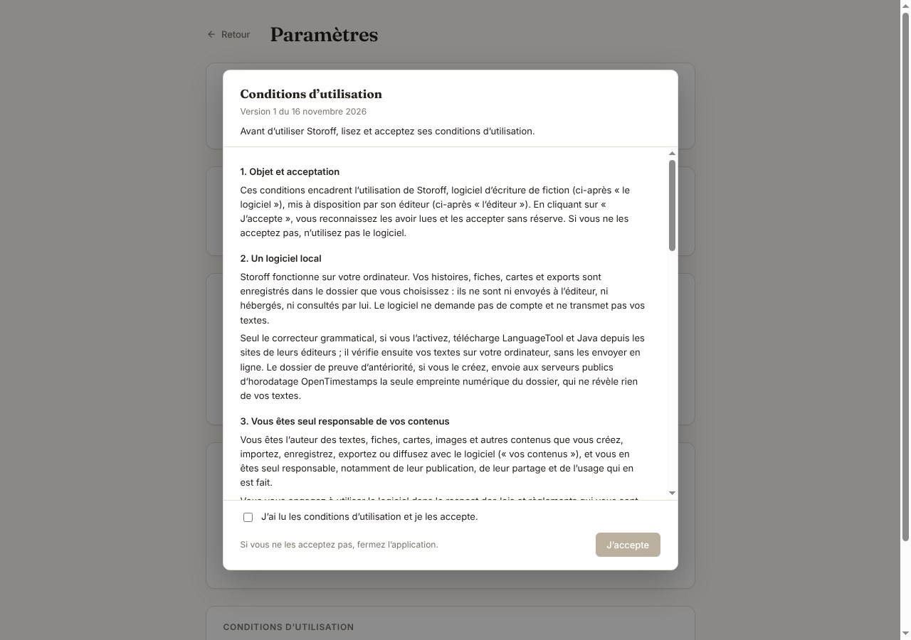
Au premier démarrage, Storoff présente ses conditions d'utilisation. Cochez « J'ai lu les conditions d'utilisation et je les accepte », puis J'accepte. Elles disent notamment que vos histoires restent sur votre ordinateur, que l'éditeur n'y a pas accès, et que vous êtes seul responsable des contenus que vous créez : la création de contenus illicites est interdite. Si elles changent, la nouvelle version est présentée au démarrage suivant.
Où sont les histoires ? Dans Documents/Storoff/ par défaut. Chaque histoire est un dossier de fichiers
JSON lisibles : story.json, un sous-dossier par sorte de fiche, et .history/ pour l'historique. Rien n'est
envoyé sur internet.
La version navigateur (pour le développement) garde les histoires en mémoire le temps de la session.
15. Raccourcis clavier
⌘ sur Mac, Ctrl sur Windows et Linux.
| Raccourci | Action |
|---|---|
| ⌘B · ⌘I · ⌘U | Gras, italique, souligné |
| ⌘⇧S | Barré |
| ⌘⇧L · E · R · J | Aligner à gauche, centrer, à droite, justifier |
| ⌘Z · ⌘⇧Z | Annuler, rétablir |
| Tab · ⇧Tab | Insérer une tabulation, la retirer |
- puis espace · -- |
Tiret de dialogue (début de ligne), tiret long |
| ⌫ juste après une correction | Défaire la correction typographique |
| ⌘ clic sur un nom | Ouvrir sa fiche |
| Clic droit | Corrections, dictionnaire, fiche à créer |
| ⌘F · Entrée · ⇧Entrée · Échap | Rechercher, résultat suivant, précédent, fermer |
| ⌘⇧F · Échap | Mode focus, en sortir |
| F7 · F8 · ⇧F8 | Mode correction, erreur suivante, précédente |
| F9 | Loupe du style |
| ⌘S | Enregistrer tout de suite |
| ⌘/ | La liste des raccourcis |
| ← → · Page ↑ ↓ · Début · Fin | Tourner les pages du livre |